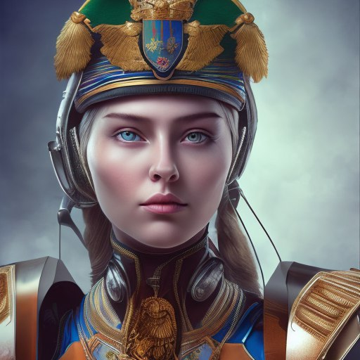
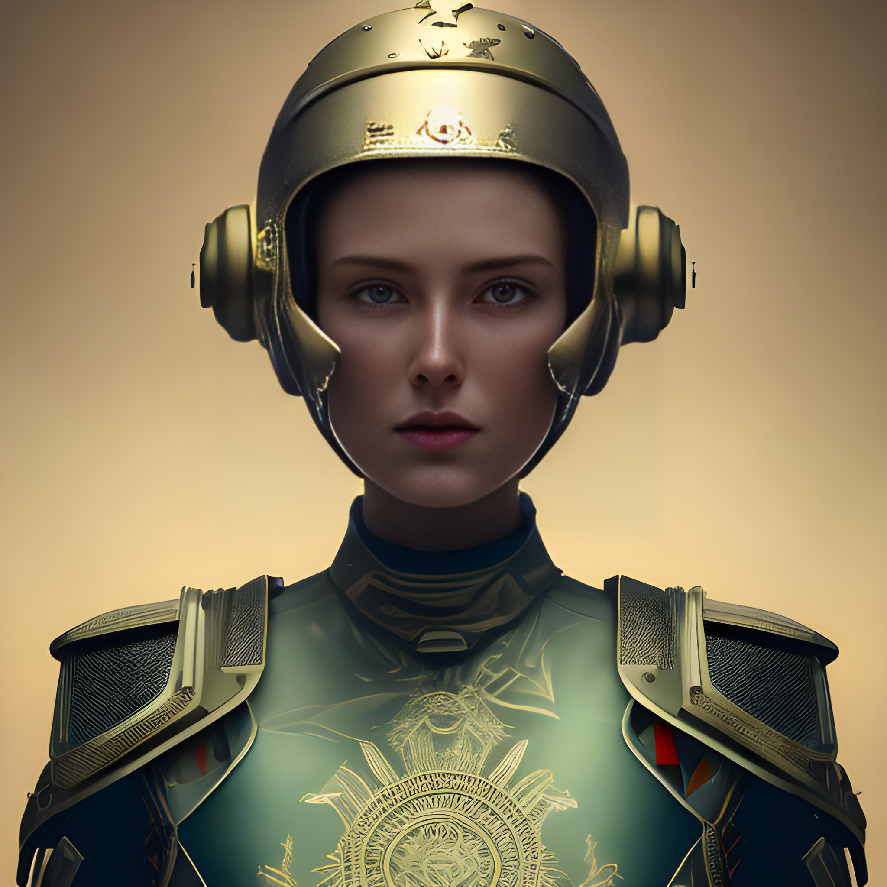

Россия
Итак, начнем с России. Катание на танках в Подмосковье организует компания КубинкаТур, одна из ведущих компаний на этом рынке, с большим опытом и разнообразием бронетехники. У них даже можно покататься на танке Т-34, легендарным танком времен Второй мировой войны. Т-34 был разработан в 1940 году и стал одним из наиболее массовых танков в истории. У КубинкаТур катание на танке доступно за разумную цену и является популярным видом развлечения не только для российских граждан, но и для иностранных туристов, посещающих Москву и Подмосковье.
Беларусь
В Белоруссии катание на танке доступно на историко-культурном комплексе «Линия Сталина» и Танковом полигоне "Ждановичи". Вы сможете покататься на танках, таких как Т-34, Т-55,ПТ-76, Т-44, БТР-80. БТР-80 - это бронетранспортер, который был разработан в Советском Союзе в 1980-х годах. Это транспортное средство может перевозить до 10 человек и имеет высокую проходимость по бездорожью.
Польша
В Польше катание на танке доступно в Tank Driving Poland, PanzerFun и Tank Driving Poland. Они предлагают катание на современных моделях танков, таких как T-55, T-72 и Leopard 1. T-55 - это советский танк среднего класса, который был разработан в 1950-х годах. T-72 - это советский танк, который был разработан в 1970-х годах. Leopard 1 - это немецкий танк, который был разработан в 1960-х годах. Катание на танке в Польше - это возможность узнать больше о технике и истории военных конфликтов.